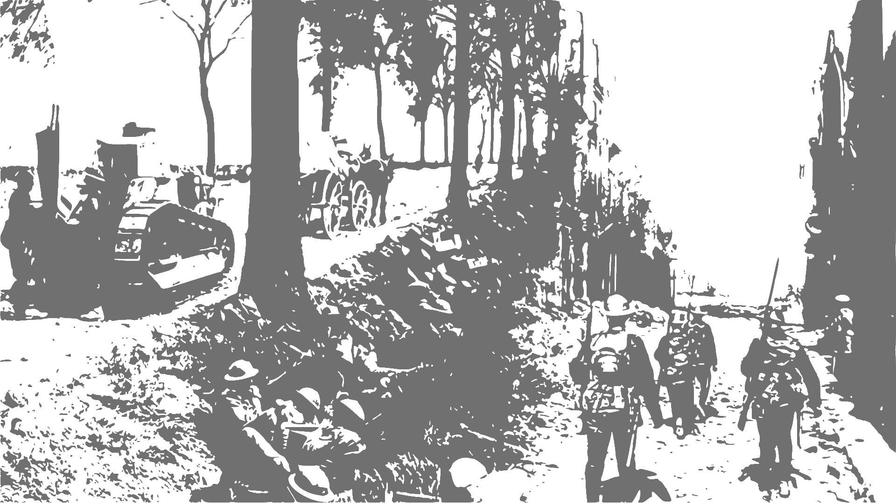
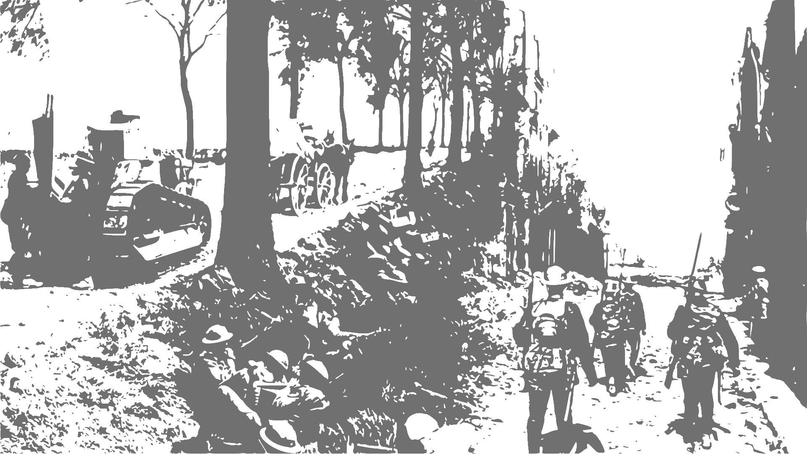

Hello. We are
Confoederatio. We are a hybrid R&D/grand-strategy collective that works on a wide range of projects, most notably historical databases, geospatial statistics, game engines, and other associated projects. We only have two active members,
Australis (Aust Kätzchen), and
Vis (Vis Tacitus), so we may be often overstretched at times.
This website is still under construction, although we have decided to make it currently operable due to present time constraints. As such, you may find this website relatively janky at times. We are working on addressing these issues as soon as possible.
You can contact us at
vf.confoederatio@gmail.com, as well as our Discord,
Midnight.
Naissance, and its associated databases,
Eoscala,
Velkscala, and
Stadestér are our largest research projects at the moment, with Naissance being the GIS that ties everything together.
All of these datasets are provided at 5-arcminute or finer resolution from 10000BC - Present.
Confoederatio's underpinnings mainly go back to the Cold War modding community from 2019-2020, particular amongst
11:59 and AOC2/AOC3 with Midnight. As these projects no longer became viable, much of the community's work was forked to independent grand-strategy projects such as Triumph & Tragedy, as well as applied modelling and geospatial statistics.
Confoederatio was formed mainly as a single merger of a bunch of disparate projects within Midnight between similar members in 2023, and can be split into three or four main branches, namely:
- CAD (Confoederatio, Aristic Division)
- CRD (Confoederatio, Research Division)
- CTD (Confoederatio, Technical Division)
This in addition to the
Preservés des Confoederatio, which operates our physical/digital archives that we are currently working on migrating.


 
